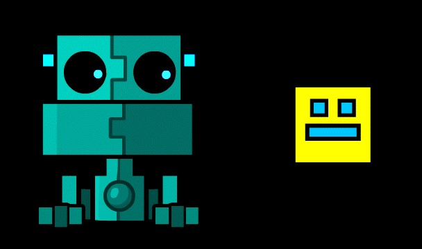

RTJ là một người vừa “tài năng”, vừa giàu có, chủ yếu là do bố mẹ khá giả. Bố mẹ giàu có đến mức cho RTJ sống ở một thành phố khác vào lúc 14 tuổi do thừa mảnh đất, và trường RTJ muốn theo học cũng tiện ở đó luôn.
Ở thành phố mới, tuy rằng RTJ đã biết sống tự lập, nhưng lại không thể kết bạn mới nào cả. Thậm chí, anh còn ngồi riêng một chỗ trong lớp, không ghép cặp được với ai trong suốt ba tuần đầu, và đến lúc chuyển chỗ thì anh gặp một người không nói chuyện nhiều.
RTJ đã khá chán với việc sống cô đơn, nên quyết định khám phá hàng xóm để xem ở đó có thể làm bạn với ai không. Trong khi ngó nghiêng xung quanh nhà, anh nhìn thấy biển hiệu to đùng: Scratch’s Shop Cửa hàng của Scratch.
Là một người chơi Geometry Dash không lâu năm, anh lập tức biết Scratch là tên một người bán hàng trong trò chơi cùng tên và đã vào cửa hàng ngay mà không có chút do dự. Và đúng như anh nghĩ, Scratch ở đây giống y hệt trong trò chơi. Sau khi kể chuyện về đời sống của anh, Scratch cũng thấy hứng thú vì bản thân mình cũng khác thường, khi đã quyết định bỏ đại học để đi bán hàng, mặc dù thu nhập chỉ ở mức “đủ hài lòng”. Cộng thêm với việc cuộc sống bán hàng của anh khá tẻ nhạt, anh cũng muốn có một ai đó để mình đỡ cô đơn.

Cứ vài hôm, Scratch và RTJ gặp nhau ở cửa hàng đó, kể chuyện vặt và… sống chung với nhau vào những hôm chán chường. Dù có sự khác biệt về tuổi tác, văn hoá, cách sống, nhưng hai người vẫn hoà hợp với nhau một cách… khó có thể giải thích.
Các mẩu truyện ngắn sau đây kể về những tình huống bình thường trong đời sống của cả hai người, vì tình huống kì lạ sẽ biến nó thành truyện dài.